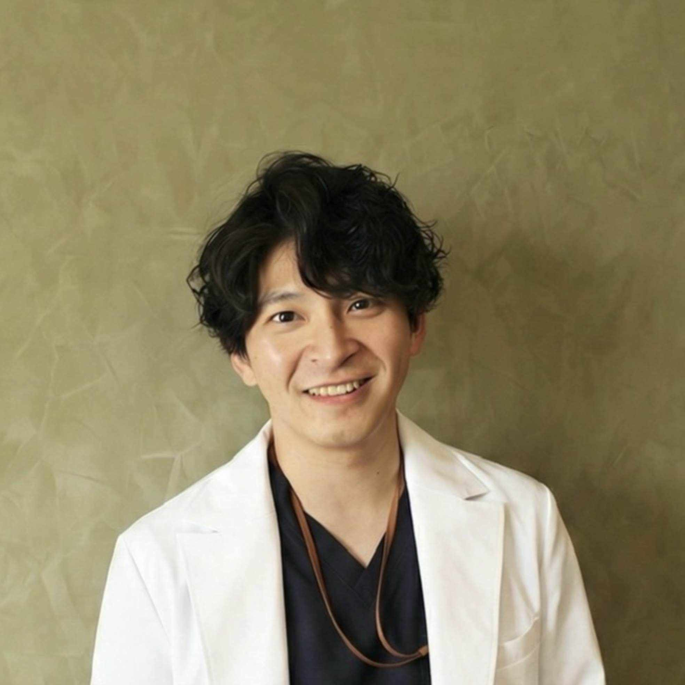

eGFR slope予測Webアプリ
J-CKD-DB-Exを用いて慢性腎臓病患者のeGFR slopeと腎予後を予測。モデルの構築と予測結果の可視化を担当しました。
詳細を見るANESTHESIOLOGY · BIOSTATISTICS
中島 誉也麻酔科医・生物統計家
長崎大学病院の麻酔科医・生物統計家。診療データを用いた臨床研究と統計解析に取り組んでいます。

長崎大学病院 麻酔集中治療部 医師・臨床研究センター 助手
臨床研究センターでは研究デザインと統計解析を担当しています。長崎大学大学院医歯薬学総合研究科の博士課程に在籍し、TXP Medicalとの共同研究にも参加しています。
日本麻酔科学会 九州支部
「敗血症性ショックにおけるノルアドレナリン高用量到達後のバソプレシン超早期併用と早期併用の比較：公開ICUデータベースを用いた後ろ向き観察研究（target trial emulation）」
第87回 日本呼吸器学会・日本結核病学会 非結核性抗酸菌症学会 日本サルコイドーシス／肉芽腫性疾患学会 九州支部秋季学術講演会
「録音肺音の分離技術解析の透析前後の coarse crackles 変化への臨床的応用」
敗血症や周術期の診療データを中心に、治療の開始時期や患者ごとの経過を研究しています。
多施設コホートや診療データベースを用いた観察研究。Target trial emulationや周辺構造モデルを用いて治療選択と転帰の関係を検討します。
慢性腎臓病のeGFR slopeを中心に、診療データを用いた予測モデルを研究しています。
非線形混合効果モデルと関数データ解析を用い、乳酸値などの測定値が時間とともにどう変化するかを調べています。
医学統計と臨床研究での生成AI活用について執筆しています。noteには文献検索やスライド作成の手順、周術期データベースの解説を掲載しています。
発表済み8件・登壇予定1件
長崎大学で医学統計学を担当しています。mJOHNSNOWでは全5回の講座で生成AIを使った研究と論文執筆を教えました。
研究テーマの探索、文献検索・管理、統計解析、論文執筆、スライド作成における生成AIとデジタルツールの活用を扱う。
CONTACT
共同研究や統計解析、講演のご相談はメールでご連絡ください。